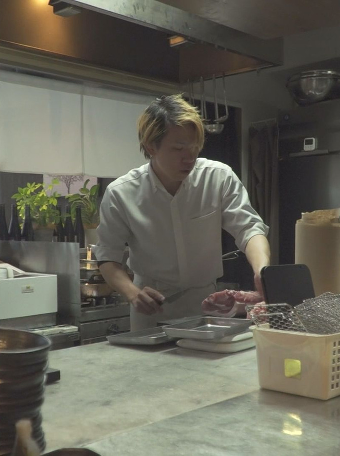
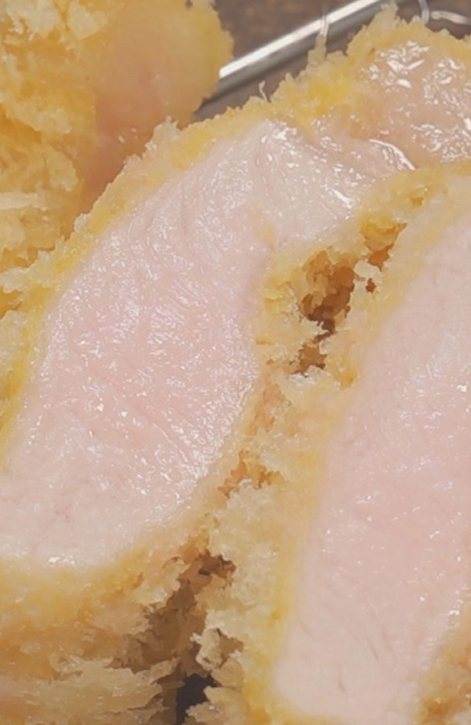
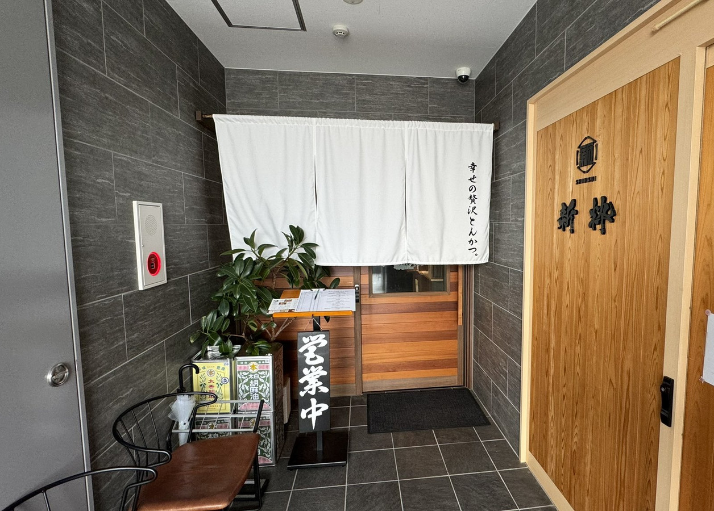
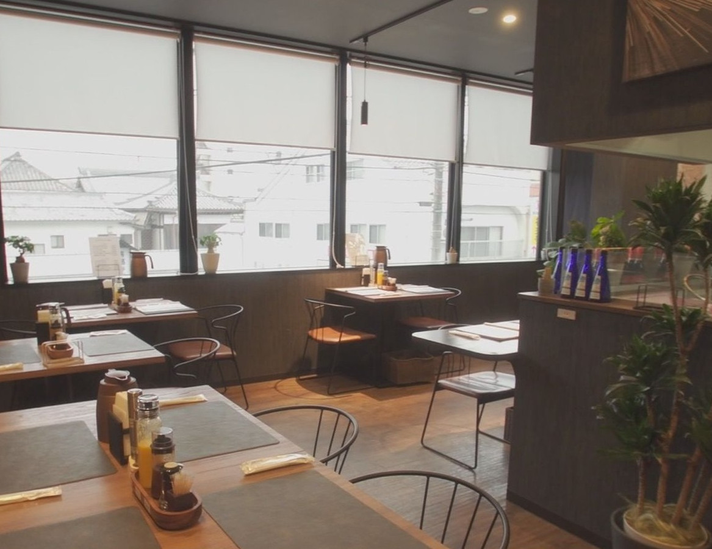
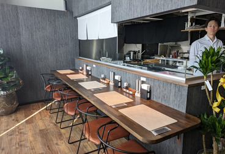
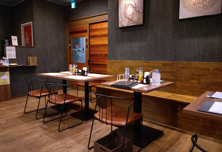
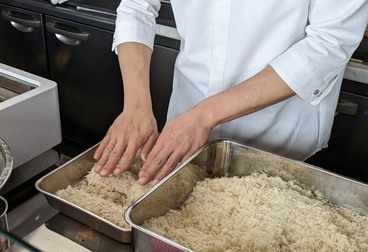
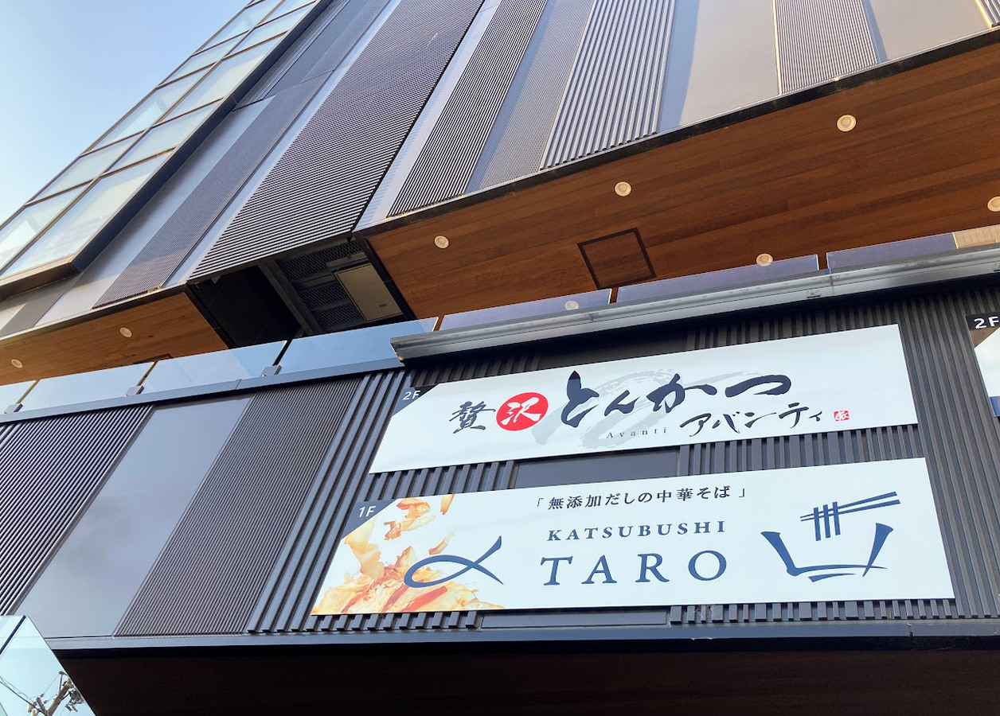

こだわり
当店のとんかつは、店主厳選の美味しい食材に、とんかつ専用最高級生パン粉。揚げ油は太香、太白胡麻油のみ使用しております。揚げ方は極低温と低温の２種類の温度を使って２度揚げし、溶けるような柔らかさに仕上げております。糖度が違う２種類のパン粉を使い分け、豚は低温で白く、牛は高温でキツネ色に。試行錯誤の末辿りついた極みの境地、ご賞味ください。




当店のとんかつは、店主厳選の美味しい食材に、とんかつ専用最高級生パン粉。揚げ油は太香、太白胡麻油のみ使用しております。揚げ方は極低温と低温の２種類の温度を使って２度揚げし、溶けるような柔らかさに仕上げております。糖度が違う２種類のパン粉を使い分け、豚は低温で白く、牛は高温でキツネ色に。試行錯誤の末辿りついた極みの境地、ご賞味ください。





三重県松阪市京町515-8 SUNRISEビル 2F JR・近鉄 松阪駅西口から徒歩3分